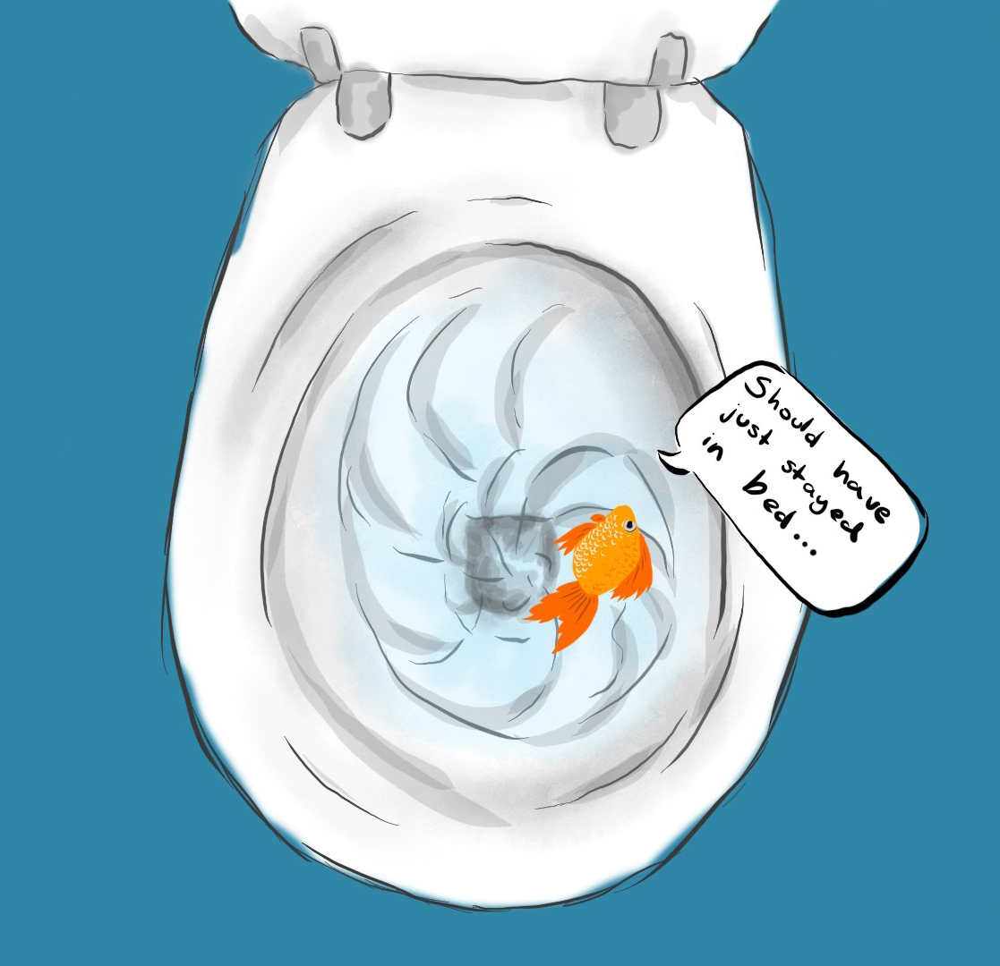
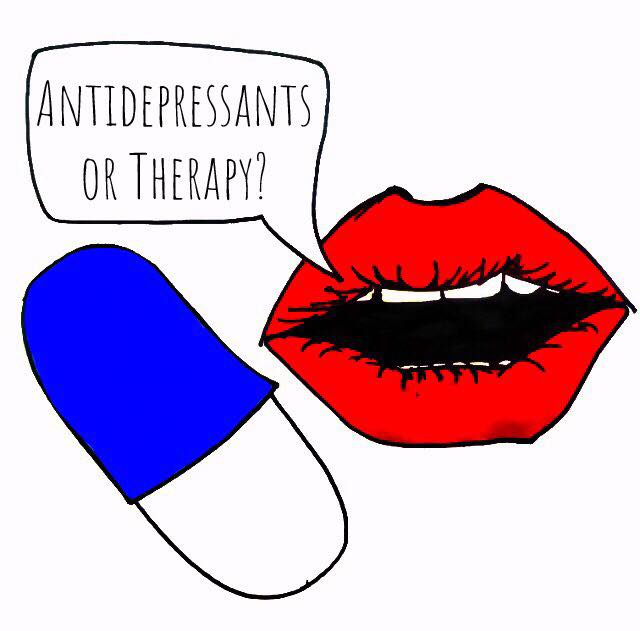
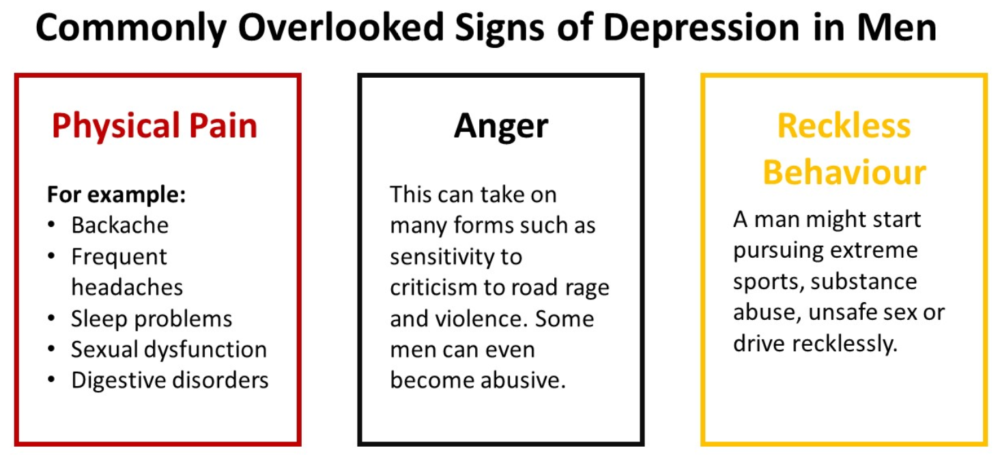
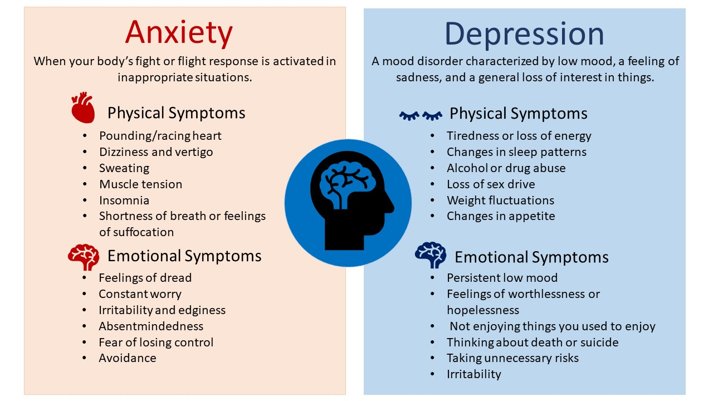
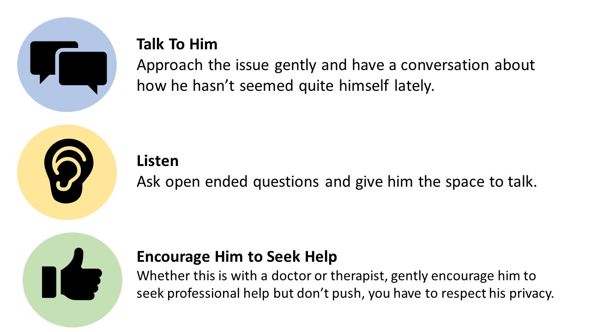

In our 1 in 4 Anxiety Blog our experienced Psychotherapists, Hypnotherapists and Counsellors discuss anxiety, depression, sexual problems, panic attacks, addictions and more.
Why is our Anxiety Blog called 1 in 4?
It’s because 1 in 4 of us are affected each year by Anxiety and many other issues that cause mental distress.
In a world where even mental well-being can be pressurised, a “cheat day” can help us recharge. In the famous words of the Kit Kat marketing team: “Take a break”. Sex sells. Fitness sells. Health sells. I’m confronted by this every
time I log on to social
Game of Depression: Is Arguing Psychotherapy vs Pharmacotherapy Really Worth It?
By Astrid Harbour on May 15, 2019
In a society where healthcare is the best it’s ever been, where we have access to more resources, education, support – you name it – rates of depression are rising. In the UK alone, between 2017 and 2018 rates of depression rose by
almost 1% (1, 2).
The Silent Epidemic: Depression and Anxiety In Men
By Morton Harbour on March 29, 2019
Depression sneaks up on people and can often start with a small worry, anxiety, or a feeling of being down. Everyone feels worried and sad at times and this makes anxiety and depression not only hard to recognise but also hard to accept.
The socialisation of men
A very warm hello and welcome to the new website for Morton Harbour, we hope that you like the layout and are finding it easy to navigate around, we are delighted by it’s launch and hope that subscribers will find it both informative
and supportive …
In a world where even mental well-being can be pressurised, a “cheat day” can help us recharge. In the famous words of the Kit Kat marketing team: “Take a break”.

Photo of fish flushed down a toiletTaking a breather is not the same as giving up. It’s okay to have a good day or a bad day and not think too deeply about it. Art by Zuzanna Milancej.
Sex sells. Fitness sells. Health sells. I’m confronted by this every time I log on to social media to a slew of gym selfies or I walk into a drug store to be met with a wall of supplements. But, perhaps more insidiously, I’ve
noticed a new wave of health marketing creeping in whilst we’ve been busy bashing influencers on social media for face-tuning their bodies to within an inch of reality: mental health marketing. Whilst generally a positive
movement (mental
health needs more awareness and acceptance), this constant onus on happiness, and self-love is a new kind of pressure facing us all.
With the constant cacophony of self-care and self-acceptance mantras, there is little room for self-doubt or low self-esteem that all of us have. It can feel like a failure to have bad days when we do all the “right things” for our mental well-being. Not only that, to feel like a failure for having a bad day makes us feel even worse in a world pressurising us to accept and love ourselves all the bloody time. Frankly, it’s exhausting.
I’m going to give myself a break. Much like eating a whole packet of chocolate digestives isn’t good for my waistline; hiding in my house all day isn’t good for my mental state. I’m not going to stop striving to feel better – I don’t
stop trying to eat healthily because I ate a packet of biscuits – but I’m also human. So if today I only leave the sofa to go to the loo, I’m going to let it go, give myself a day off from the constant obligation of positivity and realise that whether or not I have a good day is not the be-all and end-all. If in an hour I go out to enjoy the weather, I’m not going to dissect it too deeply – my self-analysis or self-congratulations can wait until tomorrow.
A day off from the pressure and expectations is needed once in a while. And who knows? Maybe my mental health will
benefit. My energy levels surely will.
Game of Depression: Is Arguing Psychotherapy vs Pharmacotherapy Really Worth It?

Photo of medication
In a society where healthcare is the best it’s ever been, where we have access to more resources, education, support – you name it – rates of depression are rising. In the UK alone, between 2017 and 2018 rates of depression
rose by almost 1%12. In real terms, that’s 560,000 people. A hell of a lot. This new data
doesn’t necessarily mean that people are more depressed. Yes, that is one explanation, but you also have to account for positive changes such as increased awareness and decreased stigma encouraging people to seek help. There is
another discussion running parallel to this, however, a redundant one. One that dictates, and itself stigmatises what help we should seek: should we medicate or should we talk? In the battle for this Iron Throne, there are no winners.
Drugs vs Words
Drug therapy is perhaps the most well-known and recognised treatment of depression to the average person. It is also the most stigmatised. Who can blame them when pharmaceuticals are constantly all over the news, all over
the forums, and dominate conversations about depression?
What if I told you that there was a treatment for depression with the same success rates as antidepressant drugs? That, unlike the litany of side effects from those, this treatment has none. Well, now I’m going to tell you that such a treatment actually exists and it’s name is psychotherapy.
It’s been known for a while that talking therapies and antidepressants have the same rates of success (rates of relapse are less well studied). A systematic review and meta-analysis of randomised controlled trials of antidepressants
and psychotherapy – in this case CBT – was published in 20153 that showed this definitively. CBT lends itself well to research as it is short-term and incredibly
structured (if you look at self-help books, you can even say standardised). This does not mean that it is the best or the most useful, just that it has been the most looked at. Other types of therapy include interpersonal therapy,
psychodynamic (or psychoanalytic) therapy, or some combination of them all.
Talking vs….Other
Types of Talking These other types of therapy are now becoming as studied as CBT, as it comes under fire due to studies using low quality evidence, weak empirical comparisons, researcher bias, and limited efficacy. For example, there is a currently a
trial underway exploring the efficacy of hypnotherapy and hypnosis as therapeutic adjuncts in depression 4. Another recent systematic
review showed equivalence between psychodynamic/psychoanalytic therapy and other forms of CBT-based psychotherapies 5.
Our understanding of depression and its treatment is very much in its infancy (we don’t even know what causes depression – inflammation? neurotransmitter imbalance?). What
we do know, however, is that a combination of talking therapies and antidepressant medication has been shown to have better effects than either treatment alone 6.It
is not a case of drugs vs talking. Nor is it a case of having to participate in one type of talking therapy either. There is no rule book here and nothing to say (rather the opposite if you ask me) that a multi-pronged approach
won't work better. In medicine, we are increasingly aware that individual variation is huge and what works well for one person, might not work well for another and vice versa. Hence the dawn of new fields such as nutrigenomics,
and the advent of an era of personalised medicine.
It’s 2019 people, bottling up emotions and experiences is no longer in vogue. Embrace health, embrace life. Do this by seeking treatments that work for you, exploring treatment options – if one approach doesn’t work, don’t give up. Try another!
Amick H, Gartlehner G, Gaynes B, Forneris C, Asher G, Morgan L et al., 'Comparative benefits and harms of second generation antidepressants and cognitive behavioral therapies in initial treatment of major depressive disorder: systematic
review and meta-analysis', BMJ, 2015;351(8037):h6019, available from: https://www.bmj.com/content/351/bmj.h6019British medical journal article
Fuhr K, Schweizer C, Meisner C, Batra A., 'Efficacy of hypnotherapy compared to cognitive-behavioural therapy for mild-to-moderate depression: study protocol of a randomised-controlled rater-blind trial', BMJ, 2017.
Steinert C, Munder T, Rabung S, Hoyer J, Leichsenring F., 'Psychodynamic Therapy: As Efficacious as Other Empirically Supported Treatments? A Meta-Analysis Testing Equivalence of Outcomes', American Journal of Psychiatry,
2017;174(10):943-953.
Hollon S, DeRubeis R, Fawcett J, Amsterdam J, Shelton R, Zajecka J et al., 'Effect of Cognitive Therapy With Antidepressant Medications vs Antidepressants Alone on the Rate of Recovery in Major Depressive Disorder', JAMA Psychiatry,
2014;71(10):1157.
The Silent Epidemic: Depression and Anxiety In Men
Depression sneaks up on people and can often start with a small worry, anxiety, or a feeling of being down. Everyone feels worried and sad at times and this makes anxiety and depression not only hard to recognise but also hard to accept.
The socialisation of men as strong, emotionless, and self-reliant is well-known to create a barrier to seeking help. Men aren’t taught how to communicate their feelings in the way that women tend to be, and this lack of emotional
awareness can have devastating consequences. For a lot of men, anxiety and depression are strange and isolating experiences in which symptoms are not associated with mental ill-health but with weakness.
In the UK, a woman is twice as likely to be diagnosed with depression as a man (Mental Health FoundationMental health organisation website).
This, however, doesn’t necessarily mean that twice as many women are depressed. How many men are not coming forward? The answer is a lot. According
to Samaritans, men are four times as likely to commit suicide than women (SamaritansSamaritans webiste)
– it’s plain to see the numbers don’t add up.

Commonly overlooked signs in menMen are much more likely to exhibit the “hidden” symptoms of depression rather than obvious sadness or low mood. Depression tends to be much more obvious in women.

Anxiety versus depressionSome common symptoms of depression, these can vary between and even within individuals and should be used only as a guide.
Getting Help
Go to your GP:
Your doctor can assess if you are suffering from anxiety or depression. They will work with you to find the best treatment plan for you. This is an excellent place to start, especially if you have an existing medical condition that might be making the
situation worse.
Seek therapy:
Not everyone is ready to see their doctor, and that’s okay. Some men might be more comfortable talking to a private counsellor or psychotherapist. Anxiety and depression can be difficult to manage alone. Psychotherapy is a proven effective treatment for
anxiety and depression.
Talk to a friend:
Sometimes making the first step in recovery is difficult. Talking to a friend can give you the support or encouragement you need. Don’t suffer alone.

How to help men3 key steps to help approach a man you think might have anxiety. Keep in mind that he might get defensive or shut off and don’t less this worry you. Be open and gently but don’t push too hard.back to the top of our blogBack
Welcome to Our Website
A very warm hello and welcome to the new website for Morton Harbour, we hope that you like the layout and are finding it easy to navigate around, we are delighted by its launch and hope that subscribers will find it both informative
and supportive. Please if you have any feedback, either good or bad, let us know.
The blog itself is named 1 in 4 – the significance of this is that 1 in 4 of us are affected each year by Anxiety, Depression, Panic Attacks and
other issues that cause mental distress. But more worryingly in many ways is the growing number of young people afflicted by mental illness, this is even before they start to explore the amazing potential that they possess. This
issue is something that is very close to our hearts and we all need to actively arrest this alarming trend with support, understanding and education. We hope this blog will be helpful in that respect.
What to expect from the blog
Articles, news and opinion pieces regarding young people and the issues associated with their mental health.
Articles, news and opinion pieces that affect the wider Psychotherapy World that is both relevant & interesting and promotes a better understanding of what we do and why it works.
Please enjoy navigating the site and we look forward to hearing from you.